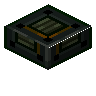

碳强化护板台阶
Carbon Reinforced Plating Slab
英文名: Carbon Reinforced Plating Slab命名空间 ID:
oritech:carbon_plating_slab类型: 方块所属模组: Oritech资料检索: 🔎 在 MC百科 搜索「碳强化护板台阶」
Carbon Reinforced Plating Slab
oritech:carbon_plating_slab类型: 方块所属模组: Oritech资料检索: 🔎 在 MC百科 搜索「碳强化护板台阶」